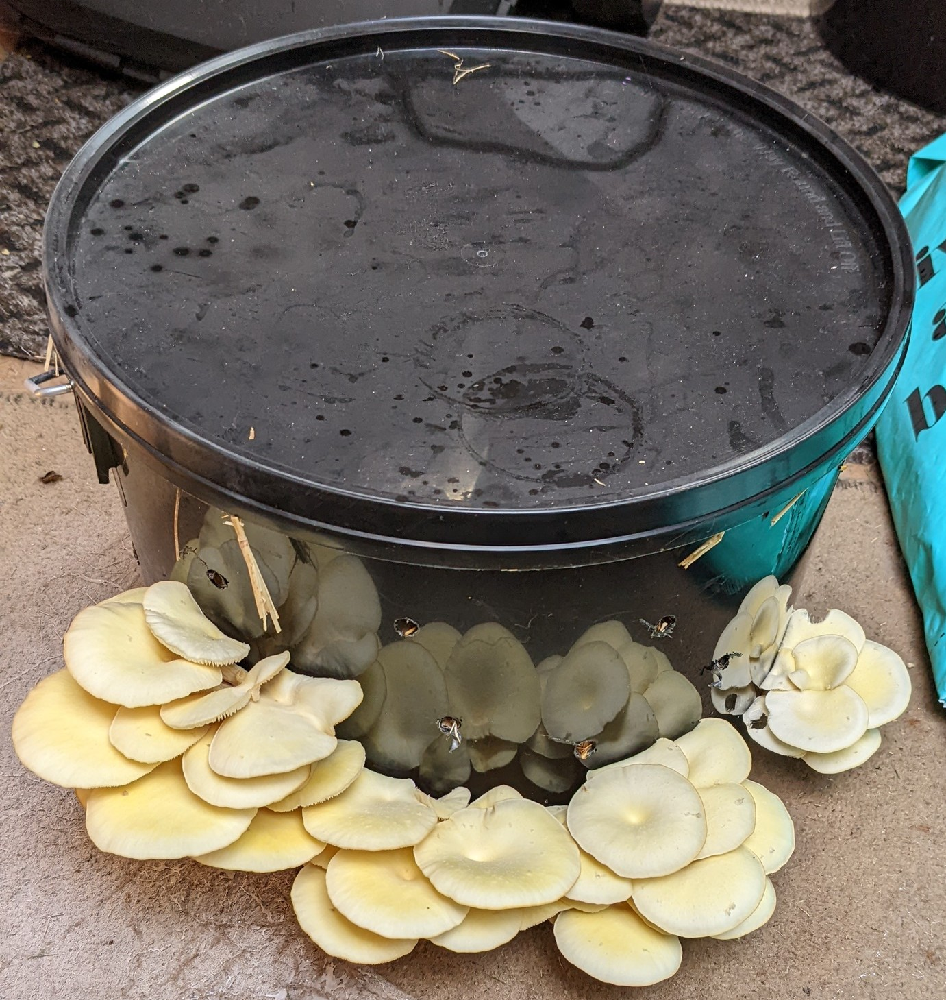
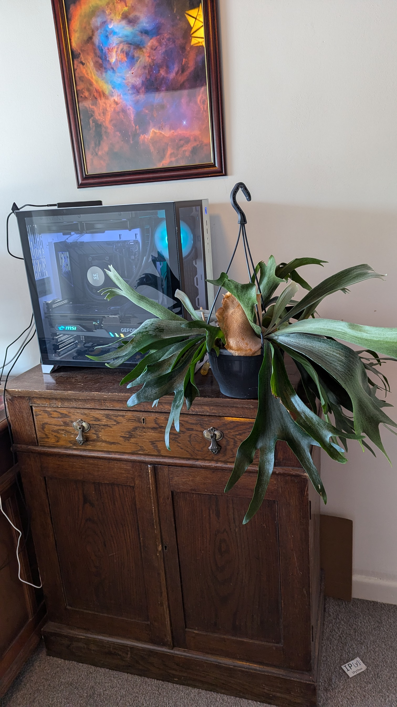
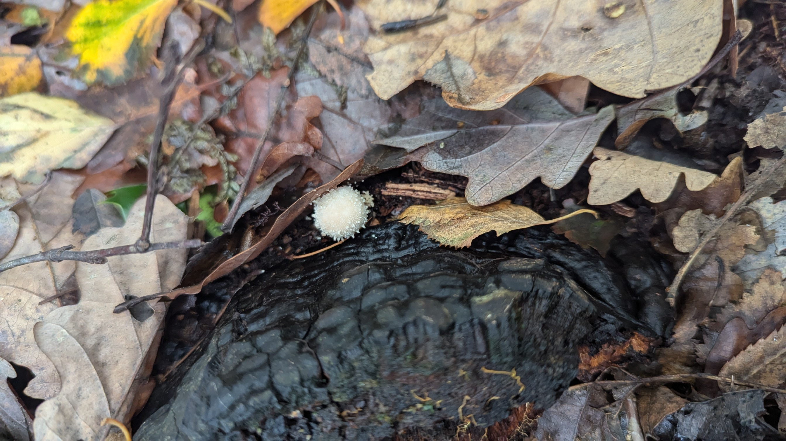
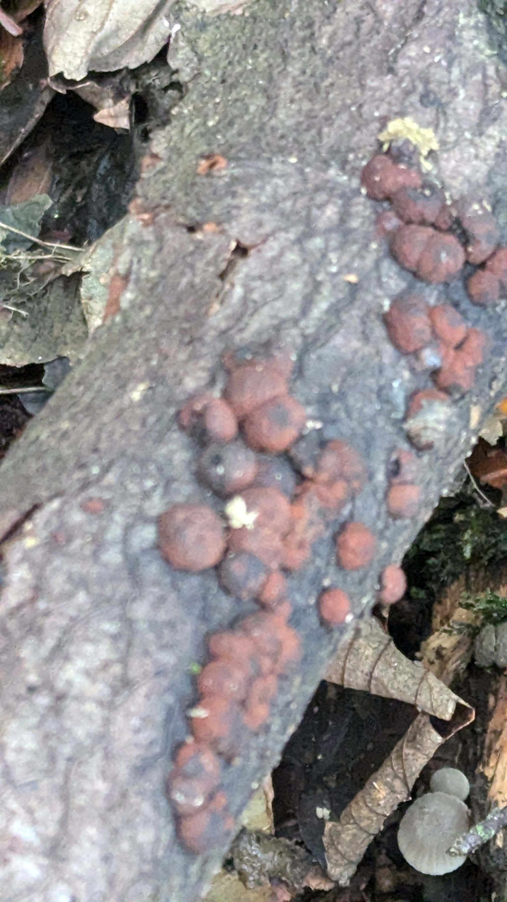
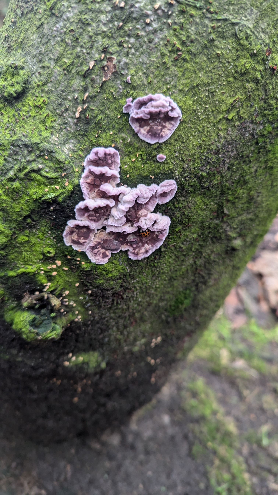

Project Overview
The UK is home to tens of thousands of fungal species. As a hobby, I have started building a personal mushroom biobank. Whenever I find an interesting specimen, I preserve a small sample and assign it a unique NFC tag. The tag links to a digital record containing photographs, the collection location, date, season and habitat.
Over time this creates a growing archive of fungi collected across the UK, allowing me to revisit previous finds, compare specimens collected in different seasons and habitats, and build a long-term record of local fungal diversity. So far I have catalogued more than 157 specimens.
🍄 Recent Finds





🏷️ Digital Archive
Each preserved specimen is linked to a PostgreSQL database using its NFC tag. Every record stores photographs, GPS location, habitat, collection date, season and identification notes. The recorded species can also be exported to phyloT to generate a phylogenetic tree of the collection.
📊 Collection Statistics
157+
Specimens
NFC
Tagged Archive
PostgreSQL
Digital Database
UK
Collection Sites